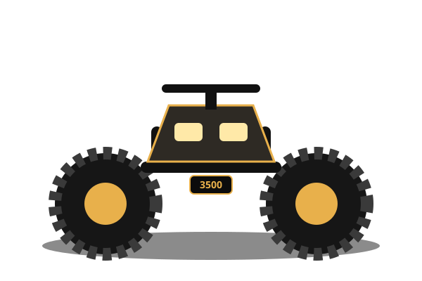
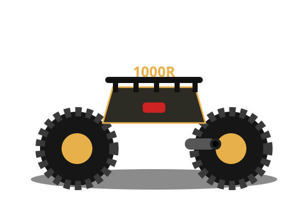

Gallery


Specs that matter
Engine
Rotax 1000R V-twin, liquid-cooled — 101 hp with Intelligent Throttle Control and 3 riding modes.
Mud hardware
Factory snorkel kit, relocated radiator and 30-in ITP Cryptid tires on 14-in beadlock wheels.
Work capacity
Up to 1,830 lb towing, front + rear racks, and a 3,500-lb winch as standard.
Handling
Tri-Mode Dynamic Power Steering, double A-arm front with sway bar, TTI rear suspension.
Why the XMR
- Ride out of anything. High air intake and high radiator placement keep breathing clean in deep ruts.
- Drive, don't dig. 30-inch Cryptids with aggressive tread paddle through clay and swamp.
- Built to rescue. Full skids, heavy-duty bumpers and a winch that pulls you — and your buddies — home.
From $17,999
Plus destination and setup. Finance from ~$350/mo with approved credit — machines move fast in spring, reserve yours.
Reserve this machineIndicative demo page — specs and pricing may vary by model year and dealer.